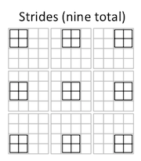
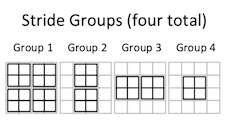

Experiments with implementing a convolutional neural network (CNN) in NumPy.
Written by David Stein (david@djstein.com). See index.html for more information.
Also available at https://www.github.com/neuron-whisperer/cnn-numpy.
Let's get this out of the way:
Make sure you have Python 3 installed with requests and NumPy:
python3 -m pip install requests numpyClone the repository, or just download mnist.py, cnn_numpy.py, and cnn_numpy_sg.py.
Ensure that you have (a) a working internet connection or (b) a copy of the MNIST handwritten digits data set. Just grab the first four files on the page and save them (with the original filenames) in the same folder as the Python scripts. No need to unzip them.
Run the script:
python3 mnist.py cnn
This will train a simple CNN against the MNIST data set. You can replace cnn with flat to run a non-CNN fully-connected model instead. You can also append naive to use the naive CNN implementation, which runs much, much slower.
For students who want to learn about convolutional neural networks, one of the best-known tutorials is Dr. Andrew Ng's "Building a Convolutional Neural Network Step By Step" assignment as part of the Coursera sequence on deep learning. However, the code from that example is poorly structured, incomplete, and in fact enormously inefficient - to the point where it is not feasible to see it learn anything. This project is a reimplementation of the code in that project that is cleaner, complete, and adapted for much faster performance (x1,000!) using NumPy.
As a study tool or reference for machine learning architectures, particularly CNNs.
As a demonstration or proof-of-concept, kind of like a machine with the cover removed. If you want to see a CNN in action - one that's largely transparent, where you can see and easily understand the details of the layers in action - this project provides some different architectures that successfully classify the MNIST data set.
As an experimental package. You can tweak the hyperparameters: models, training, testing, etc. - and see how the models respond. You can easily build many kinds of models, tweak the code to add activation functions / optimizers / regularizers / normalizers / new layer types / etc., and train your models against the MNIST data set. It is meant to be simple, readable, and extensible.
Anything of moderate-or-greater complexity, where training in a reasonable amount of time requires a GPU or a distributed architecture such as a computing cluster. TensorFlow and PyTorch will run circles around this code.
A convolutional neural network, which is a type of artificial neural network that is extremely useful for tasks like detecting shapes and objects in images.
NumPy is a library for Python that is useful for matrix operations - basically, calculations over huge batches of numbers. The NumPy library is highly optimized for lightning-fast operations - when used correctly, it can be thousands of times faster than plain old Python. Since machine learning requires lots of multiplications of weights with inputs, NumPy is ideal for the kinds of operations that are performed in machine learning.
Jupyter is a neat way of documenting Python tutorials. A Jupyter "notebook" is a collection of blocks, each of which is either markdown text (like HTML but easier to write) or Python code that you can run in place, view, and modify.
This data set for training simple machine learning networks.
An assignment in this Coursera sequence on machine learning taught by Dr. Andrew Ng. An outstanding course sequence for anyone who wants to get started in the field.
Dr. Andrew Ng is the founder of the Google Brian Deep Learning Project; former Chief Scientist at Baidu; current pioneer of a variety of AI-related projects; an adjunct professor at Stanford; and an all-around excellent instructor.
Several improvements:
Cleaner code. The Coursera example relies on global functions and variables passed around in dictionary caches. This project repackages the functionality into simple Python classes.
Consolidated code. The Coursera example presents the code in a set of Jupyter blocks with big chunks of exposition and unit tests in between. This project consolidates the model functionality into a small script that is easily studied.
Complete code. The Coursera example lacks a flattening layer and weight updates, and details such as fully-connected layers, weight updates, the softmax function, categorical cross-entropy loss function, and training regimen are presented only in other lessons. This project provides all of the functionality needed to train and use a variety of network architectures.
Application. The Coursera example develops a CNN, but does not apply it to any problem. This project provides an application of any model to the MNIST handwritten digits database.
Optimization. This project includes an alternative implementation of the convolutional and pooling layers that run equivalently, that can be easily dropped into place, and that run approximately 1,000 times as fast as the naive implementation.
Only NumPy and Requests (which is used to retrieve the data files from Yann LeCun's website).
To run the MNIST database with a non-CNN (flat) machine learning model:
python3 mnist.py flat
To run the MNIST database with a CNN machine learning model with the stride groups implementation:
python3 mnist.py cnn
To run the MNIST database with a CNN machine learning model with the naive implementation:
python3 mnist.py cnn naive
The syntax is TensorFlow-like - just provide an array of layer objects:
l1 = ConvLayer(32, 3) # 32 3x3 filters, stride 1 (default), zero padding (default)
l2 = PoolLayer_Max(2) # 2x2 pooling
l3 = FlatLayer() # flattening layer
l4 = FCLayer_ReLU(100) # 100-neuron dense layer, ReLU activation
l5 = FCLayer_Softmax(10) # 10-layer dense layer, softmax (per-mini-batch) activation
net = Net([l1, l2, l3, l4, l5]) # sequential network with all five layers
No. In this implementation, all of the weights are initialized at the beginning of training, so each layer figures out its parameter set based on the dimensions of the first mini-batch.
Training using one mini-batch:
net.train(mini_batch, learning_rate) # returns (copy of layer set, CCE, CE)
Evaluation with input tensor X and a label set Y (e.g., test set):
net.evaluate(X, Y) # returns (output tensor, CCE, CE)
Prediction for input tensor X:
net.predict(X) # returns output tensor
W and b are the weight vector and bias vector. (The FC layers don't have a separate bias vector: the bias is tacked onto the end of the weight vector, and the input tensor to the layer is augmented with a 1 so that the bias is always fully activated.)
f_w is the size (width and height) of the filters. f_w = 2 specifies a 2x2 convolutional filter.
n_f is the number of filters in a convolutional layer, which is also the number of output channels from the convolutional layer.
n_m is the number of samples in the input tensor for the current mini-batch. Might vary from one mini-batch to the next (e.g., splitting a training set with 100 inputs into three mini-batches).
n_c is the number of channels in the input to the layer. (Could be the number of color channels in an image for the lowest-level layer, or the number of filters in a preceding convolutional layer.)
p and s are padding and stride. A padding of 0 is the same as the "valid" padding option in TensorFlow. If you want "same" padding, then choose a suitable value of p such that p = ((s - 1) * ih - s + fw)/2 is an integer.
ih and iw are the input height and width of each input to the layer, after padding.
oh and ow are the output height and width of each output of the layer, after padding.
Z is the product of the weights and biases. In most of the layer types, it is also the output of the layer.
A is the activation of the layer, after applying an activation function (such as ReLU, sigmoid, or softmax) to Z.
dZ is the gradient that the layer receives and applies to its weights during backpropagation from the following layer (or as calculated from the loss function, for the last layer). The FCLayers actually receive dA, the gradient of the activation function, and then run it backward through a first derivative of the activation function to calculate dZ. The other layer types don't have an activation function, and so receive dZ directly.
dW and db are the components of the gradient to be applied to the weights and biases, respectively, to perform gradient-descent optimization in pursuit of the objective function (which is categorical cross-entropy). PoolLayer and FlatLayer have no trainable parameters, so these steps are skipped.
dA_prev is the gradient that passes backward through this layer to the previous layer so that it can also apply gradient-descent-based weight optimization. It is calculated by multiplying dZ by the weights (but not the biases, since they are constants that are factored out by the first derivative).
cce is categorical cross-entropy - i.e., the sum of the vector distances between each output and the expected label, summed over the mini-batch.
ce is classification error - the number of incorrect answers in the mini-batch.
cnn_numpy.py so slow? Isn't it based on NumPy?The heart of the convolutional and pooling layers in "Build a Convolutional Neural Network Step By Step" is a four-layer Python loop. Here is the one from the ConvLayer forward pass:
for i in range(self.n_m):
for h in range(self.oh):
for w in range(self.ow):
for f in range(self.n_f):
self.Z[i, h, w, f] = np.self.input[i, ih1:ih2, iw1:iw2, :] * self.W[:, :, :, f])
self.Z += self.b[:, :, :, f]
This four-layer loop is used in both the forward pass and the backward pass of the convolutional layer and the pooling layers.
Consider applying this implementation to the MNIST handwritten digits data set, which features 70,000 images of size 28x28 and only one channel. A basic CNN architecture might include a convolutional layer with 32 filters (n_f = 32) of size 3x3x1 and a stride of one (resulting in self.oh = self.ow = 26), followed by a pooling layer. A 95% train/test split results in a training set of 65,500 images.
For the forward pass of the convolutional layer for one epoch of the training data set, the inner calculations of self.Z will run (n_m * oh * ow * n_f = 65,500 * 26 * 26 * 32 = 14,168,960,000) times.
That's 14 trillion calculations, for the forward pass only of one convolutional layer, for one epoch. The backpropagation pass executes the same loop, so another 14 trillion calculations per epoch.
While NumPy is a very fast library, it simply cannot perform 28 trillion operations in anything resembling a reasonable amount of time. (The pooling layers are similarly inefficient, but on a much smaller scale.)
On my machine, the ConvLayer architecture above this architecture is able to train on about two seconds per input sample - as in: 130,000 seconds, or 36 hours, for one epoch. It is practically impossible to see it learning anything with this performance.
cnn_numpy_sg.py different than cnn_numpy.py?The optimized implementations have an identical FlatLayer, FCLayer, and Network classes. Both ConvLayer and PoolLayer replace the four-layer loop with a two-layer iteration over the number of stride groups. This is, at most, the area of one filter (i.e., a 3x3 filter has at most nine stride groups). For operations where the stride equals the filter size, the entire forward and backward passes require exactly one iteration of this loop - each of the forward pass and backward pass are calculated, in entirety, with one massive matrix multiplication.
Stride groups are a novel optimization technique for performing convolutional and pooling operations. The idea is to replace iteration, as much as possible, with a reshaping of the input and weight tensors so that each element in each filter is multiplied together with a huge number of elements in the input tensor. So instead of iterating through the input tensors trillions of times to perform small calculations, stride groups enable NumPy to iterate only a few times, in some cases only once, to calculate the forward and backward passes.
A simple example will help. Consider a 2x2 convolutional filter with four elements:
| A | B |
| C | D |
Consider the convolution of this filter over this 4x4 input (with a stride of 1):
| 1 | 2 | 3 | 4 |
| 5 | 6 | 7 | 8 |
| 9 | 10 | 11 | 12 |
| 13 | 14 | 15 | 16 |
In naive convolution, this calculation is performed by sliding the filter over the image, performing a 2x2 element-wise multiplication at each position, and adding up the results. cnn_numpy.py does this, but performing this small 2x2 multiplication over 65,500 input samples (a 95% set of the MNIST data set), where each image is 26x26 (so 24x24 positions for each image), and for each filter, is intensely slow.
Instead, consider which elements above actually get multiplied by each element of the filter. If the output of the layer (Z) is this:
| E | F |
| G | H |
...then each of these is calculated based on a multiplication of the filter with a subset of the pixels:
E = A * (1, 2, 3, 5, 6, 7, 9, 10, 11)
F = B * (2, 3, 4, 6, 7, 8, 10, 11, 12)
G = C * (5, 6, 7, 9, 10, 11, 13, 14, 15)
H = D * (6, 7, 8, 10, 11, 12, 14, 15, 16)
In order to break down this problem, consider that the filter strides over the input nine times:

However, the iteration is still proportional to the size of the input, the number of filters, and the fine-grained nature of the stride. It will still be computationally inefficient to apply this design to data sets with larger images or networks with multiple layers.
We can do better. It would be great to grab as many of these pixels as we can during one pass through the input tensor - that's the sort of enormous calculation that NumPy does very well. One way to achieve this would be to reshape the array so that the elements against which each filter element are grouped together. NumPy can do that, too.
Unfortunately, it's not quite as simple as reshaping the array - because, as you'll notice, some of those inputs are repeated. Element 2 in the input is multiplied by both filter elements A and B. Element 6 in the input is multiplied by all four filter elements. So simply reshaping the array won't be enough.
Instead, we can divide the positions of the filter over the input into subsets of non-overlapping filter positions. For each subset of filter positions, each input element is included at most once. A careful slicing and reshaping of the array could then group together all of the input elements for each filter element and perform the weight-vector-by-input-tensor multiplication (while excluding all of the input elements that aren't covered by any filter position in this subset).
For instance, this 2x2 convolution has four stride groups:

Thus, in the first stride group:
E = A * (1, 3, 9, 11)
F = B * (2, 4, 10, 12)
G = C * (5, 7, 9, 11)
H = D * (6, 8, 14, 16)
In the second stride group:
E = A * (2, 10)
F = B * (3, 11)
G = C * (6, 14)
H = D * (7, 15)
In the third stride group:
E = A * (5, 7)
F = B * (6, 8)
G = C * (9, 11)
H = D * (10, 12)
And in the fourth stride group:
E = A * (6)
F = B * (7)
G = C * (10)
H = D * (11)
Each stride group, then, is a collection of non-overlapping positions of the filter, where the entire set of input elements that are multiplied by each filter element in all of those positions are grouped together at the end of the array.
Because each stride group allows a big slice of the array to be aligned and multiplied with the corresponding filter elements on one pass through the input tensor. This tremendously reduces the number of stride groups that must be processed, i.e., the number of iterations or passes through the array for each forward propagation / backpropagation operation. In fact, the number of stride groups is at most the area of the filter - e.g., at most nine iterations for a 3x3 filter - and typically fewer. If the stride matches the filter width, then the number of stride group is one: forward propagation and backpropagation are each performed with a single, enormous matrix multiplication.
The number of stride groups is based on the filter size and the stride. It is also based on a modulo of the input widths and heights, but it is not proportional to the input widths and heights. And it is completely irrespective of the number of inputs, the number of channels, and the number of filters.
cnn_numpy_sg.py be further optimized?Certainly. I am a NumPy amateur, and my code is pretty clumsy. I presume that a lot of operations could be equivalently performed in a much more efficient manner.
Probably not. This code will never compete with TensorFlow or PyTorch. Your time may be better spent on those. But if you're really itching to sharpen your NumPy skills or optimization, this might provide good practice.
Please feel free to contact me: david@djstein.com, or try posting on /r/deeplearning - they're pretty friendly.